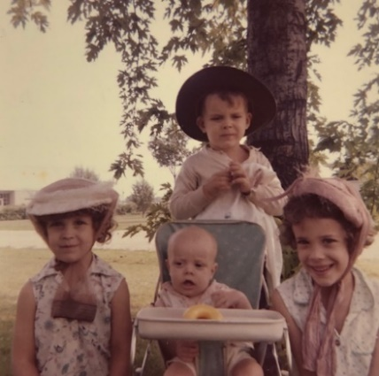
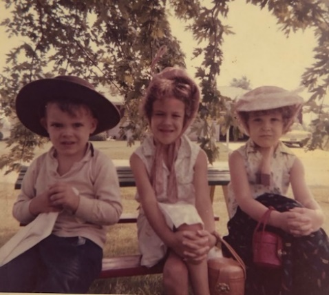
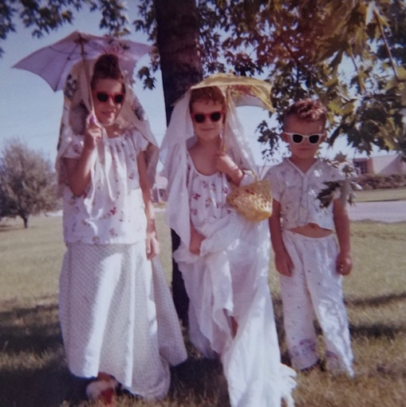
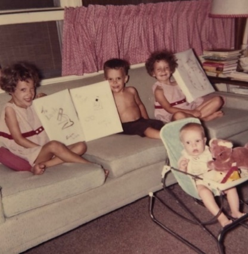
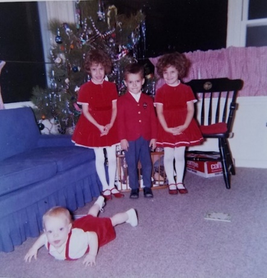
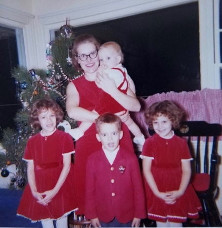
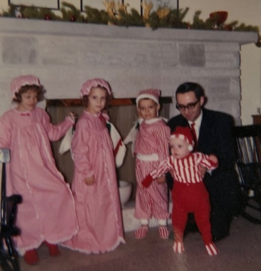
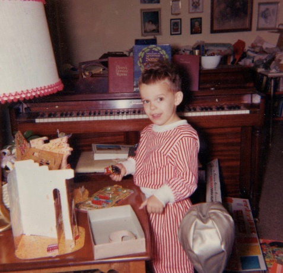
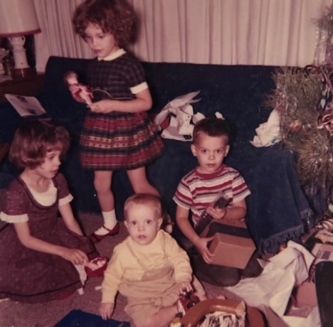
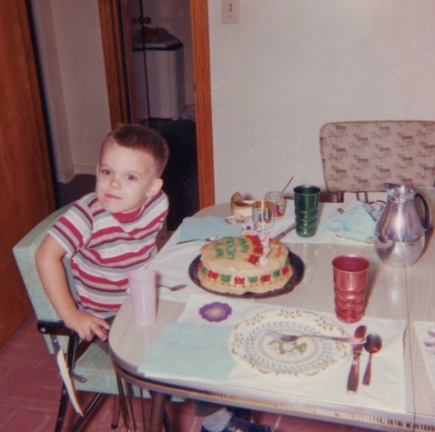

1964
The weeks slip by… Andy arrives early, but slowly. He is pronounced “perfect,” but gradually becomes “more and more like the other kids,” and even refuses to look Dad in the eye. Dad forgives him. Mom does not become pregnant. The family does not move. There is only one child in diapers. The well gives out during one “wild week.” Mom and Dad do not go to all the meetings. Lesle likes the Beatles. Lisa gets labeled. Alan runs through glass. Andy’s naps are too short. The kids are thrilled again and again. There are repairs and replacements and regular activities. And, as usual, nobody ever seems to know quite where the Laidigs are, and when they will arrive.
1-3-64 – Fri AM - Dear Mother, Hope you’re feeling better by now. When I called about Andy the nurse said you were doing better. Your blood pressure reading sounds real good – probably better than man. Everybody has been real helpful recently and we are making it OK. I have Mrs. Graber in yesterday and today so I could come to work. Ruth probably won’t come home before Monday. It’s a lot warmer her today. Got all the Christmas things OK and everyone say “Thanks.” I still haven’t taken the tree down. I’ll write details later. All the little errors are Dad’s. He must have been tired.
1-5-64 – Sun afternoon - Dear Mother and Aunt Clara, I’m at the hospital now. The visiting hours are 2-4 & 7-8. I’ve been able to get here for most of the periods with babysitters and others helping out. Ruth will go home tomorrow. She probably could have gone home today but it would have been more difficult since I took the kids to church this morning and sang in the choir. I got Laura Brenneman this afternoon. She is the high school girl who regularly sits on Wed night while we go to choir practice. I don’t know whether I’ll go to choir practice this Wed or not. I guess we’ll have to take turns on Sun morning for awhile until Andy is old enough to go out. He seems to be doing fine, but being a little early isn’t quite as active as the others were, and doesn’t always want to eat when Ruth wants him to. Ruth is feeding him, of course, like she did with Alan. I guess the kids are prepared to have a new baby brother at home but it will be interesting to see how they react. Kay Hoffland said she might come in tomorrow to clean etc. before Ruth gets home.
Glad to have your cards. Sorry I didn’t get more written but the last week has been somewhat hectic, of course. Somewhat? Last Sun morning we all went to church and s.s. as usual. We sang in the choir. The car was running then. In the afternoon I watched the football game and then we all went to the Jensens for coffee and something to eat. They live about a couple of blocks and are Presbyterians. They have 4 children and are scandinavians like the Hofflands.
Mon morning I went to work and the car started, by noon however it wouldn’t go, so I had to get a push. I had had a new set of spark plugs put in and it had been going since the first time it gave out. I couldn’t get it in the Ford place that afternoon but he said I probably could on Tues. I needed the car because Ruth had a checkup that afternoon. With a push, however, I got it started and kept it running the rest of the afternoon enough to get Ruth down to see the Dr. and then downtown for some shopping, and to pick up an Etch a Sketch for Alan’s birthday that day. The Dr. had said it wouldn’t be long, but I thought she would go a day or so. We got back home and had Alan’s birthday cake, after having stopped for hot dogs at Woolworths (Alan said he wanted hotdogs for his birthday dinner – ha!). He had his presents and we all opened the presents from you, also. Thanks again for everything. Ruth felt better later in the evening and did some ironing. I was tired and went on to bed. The Dr. had said to go on to the hospital at the first sign of anything so she woke me up about midnight and said we had better go on down. Mrs. Lewis from across the street came over and slept on the couch while we went down.
Fortunately the car started. It didn’t make much difference, however, as there was no great hurry. Ruth got some sleep that night and I dozed a little bit while waiting here. About 4:00 AM I drove the car for about 30 minutes to warm it up. Since she didn’t seem to be going very fast I went on home about 6:30 and let Mrs. Lewis go on home. That morning Cindy (she wasn’t in school) came over and stayed while I went to work. The car started that morning but wouldn’t start that noon so I got a ride home with the fellows. I left the car at the lab. I had called that morning and they couldn’t fix the car after all. Les Chafity (the fellow at the lab who is leaving) let me borrow his car, so Tues afternoon I went out and made an appointment for the car on Thurs, went downtown (took the mirror back ordered another just like it) for some things and visited Ruth, she was still in the labor room. That afternoon I had left the kids at the Jensen’s. In the evening I was able (new years eve) to get Cindy again so I came back here. Andy got here about 9:00 and I was home by 10:30. (We were off work Tues afternoon and Wed.)
Wed noon we were invited over to the Dave Stuart’s (fellow at lab) for dinner and then we watched the football games and I came on down to see Ruth while the kids stayed there. I still had the borrowed car but left it with the fellow that evening. Thurs and Fri I went to work as usual and had Mrs. Graber (the older lady who babysits) come in. She charged $5 a day. I got the car in Thurs and they fixed the automatic choke which wasn’t working, so it should start now in the 0 weather. I’ve spent $70 on the car the last two times it’s been in. Thurs night I came back to see Ruth as I did on Fri. I had Laura Thurs night, and Friday night Kay brought in some food and then came back while I came here. Sat morning I took down the Christmas tree and in the afternoon Cindy came over while I came down here. Yesterday evening we ate supper at the Van Altin’s (friends that live north of us) and they kept the kids while I came down here.
As you see, everyone has been real kind and even though it has been a hectic week it all worked out real well. Ruth got to be at home for Alan’s birthday and the baby arrived in time to be a tax exemption for 1963 – so we have no complaints ha! Ruth feels OK – she has some numbness again in a leg like she did after Alan. She may need it checked if it doesn’t go away in time. Glad to hear that you were getting to go home from the hospital and hope everything’s OK by now. Mrs. L is not coming now so I might have to take off from work some next week if Ruth is too tired. I imagine the grandparents will want to come see the new grandson before too long.
1-14-64 – Tues AM - Everyone is fine here and hope you’re all OK. As you heard we had quite a blizzard here Sun. Things are pretty much back to normal today. Andy is doing fine. He doesn’t sleep as much as he did at first, and he’s awake more at night. Ruth is getting along OK. I stayed home part of the time last week. They came home a week ago yesterday morning. We may hear from you today. They didn’t deliver mail yesterday.
1-16-64 – Thurs PM – We were glad to have your recent letter and all the cards, etc. Glad you’re feeling better. We’ve been pretty free of colds recently. I still have a touch of hoarseness when I sing. There has been a lot of laryngititis here this winter. You probably heard about the blizzard here in central Illinois; I guess other places had it pretty bad also. It started snowing and blowing last Sat night; by Sun morning it had accumulated and was a real blizzard. It continued most of the day. Since the Dr. had said Ruth could go to church if she felt like it she was planning to go. However, we all stayed home. I said she could go after I put the chains on the car but she didn’t want to go without the kids – they couldn’t possibly have walked against the wind and snow. I put the chains on the car in the afternoon but didn’t try to go anywhere. Since we were at home I worked in the basement and, except for some sorting of magic and magazines, have got it in pretty good shape again. We have been letting the cat in the basement these cold days and nights so he makes some messes that I have to clean up.
Mon morning I stayed home from work as they hadn’t plowed the parking lot yet when I went by about 9:00 (after shoveling quite a bit here to get the car out). A lot of the fellows were late getting to work that day. I shoveled some more Mon and Tues nights. There wasn’t so much snow (about 8 inches) but the drifts were very bad. Last night we had our regular babysitter, Laura, and we went to choir practice. Except for an 1½ hr shopping last week it was the first time Ruth had been out since coming home. Tonight Ruth went over to the PTA meeting. It was the first time she had been this year. She is feeling pretty good, better than with the others, I guess, but still has some numbness and now has some sinus headache or something. Sat night we will eat out with some of the Neisler people honoring that chemist Lester Chafity who is leaving.
Ruth and Andy came home a week ago Mon morning. A week ago last night I went to a party after choir practice honoring a lady choir member who is leaving town. I stayed home from work about a 1/3 of the time last week to help Ruth. I’ve gone full time this week, so we seem to be making it in good shape. Mrs. L wrote that she just didn’t feel up to coming as she did with the others. Andy is being awake more now and crying more, he is hard to burp, but Ruth still calls him a perfect baby. When he first came home he just ate and slept and hardly cried at all. He eats at least once in the night but at least we don’t have to warm bottles. The babysitter gave him some formula last night for the first time (he had water in the hospital) and she said he didn’t fuss at all and was “perfect.” I’m glad he got here before the storm as we would have been nervous.
I’m buying Ruth an oval rug for the bedroom. She was always going to put 3 small rugs (braided) together for a big one but I don’t think she’ll have time. The insurance at work paid over 2/3 of the hospital bill so that will help. It was less at the hospital here than in Chicago. Everything at work is OK. I worked on a report during the hectic 2 wks. Again, glad you’re feeling better. I guess I never did write all the Christmas details. The kids enjoyed the Dr. and nurse kits and didn’t get any big stuff. You may keep the picture of Andy (taken at the hospital with his face irritated) and the other things sent under separate cover. Ruth dyed the baby basket liner (it was pink – you and M.J. made it, I guess) a light green so it looks fresh. I put the cradle back together and Andy sleeps in it some during the day. Andy probably won’t go out for a while yet.
1-26-64 – Sun 4:30 PM - We’ve had a relaxing Sunday so I’ll write this now and take it down to mail later, along with some more birth announcements. I think Aunt Clara’s has been sent but Ruth hadn’t gotten down to yours yet. She is making them and it takes a little while; I think she has done a good job. Do any of these survive? Andy is doing fine (yes, its the one l in Philip) but has a little wheeziness now. Ruth apparently has a cold now and she doesn’t get one very often. Andy definitely has the Laidig forehead, like Alan has, but he may have more of my mouth and chin, time will tell; he certainly has the back of my head.
Too bad about Mr. Kilmer. I expect he’s in his 60’s now, isn’t he? Glad you’re gradually getting back to normal. I took the kids to s.s. this morning. Ruth stayed home with Andy. Maybe next Sun Ruth can get out and I’ll stay home. We would both have gone this morning if we could have gotten a neighbor girl to come. We’ve been in this afternoon and the kids are now watching “The Wizard of Oz” on TV – I think it’s about the 4th time that Lesle has seen it. And we would continue to watch it annually for many years to come
This Tues night I have the Neisler Credit Union meeting to attend. I have a loan with them and if we think we can afford a new car by next summer we’ll probably borrow the money from them. The Laidigs write that they may go back to the New York worlds fair this summer so they will probably stop by here on the way back. The Eldon Laidigs (the brother who is my age and who is a principal in Arvada, Colo – Denver suburb) have never visited us since we’ve been married; he may go to a Coast Guard school in Virginia this summer to teach, so they may finally go through here and visit us, we hope. They have one son, Larry.
Everything at work is about the same. My salary raise for this year was $440. This has been some discontent with salaries here but that’s pretty normal wherever you may be. While our salaries may be slightly below some of those elsewhere there are advantages here. I’ve had little or no pressure put on me for results and that makes for an easier job.
With the help of Andy I should get $300 back on my income tax. We still have some things we want to get to fix up the upstairs like we want it. For Ruth’s birthday I told her to go ahead and order an oval rug for the bedroom. Last weekend I finished cleaning up the basement so it’s in the best shape since we’ve been here. The washer is about to give out, however. It’s always something. Last Sun I took the kids to church. Our preacher is leaving. I guess some of them didn’t like him and withheld their pledges. Last Tues night Ruth went to an AAUW meeting and Andy stayed asleep for me all the time she was gone. Wed night we had our regular sitter and both went to choir practice. Thurs night I went to Westminster Men’s meetings at the church. Yesterday morning Ruth took the kids and Lesle got new red Sunday shoes like Lisa. Later she took Lisa downtown for a haircut.
Mom takes over: I was going to write my thank you on your announcement, but since I haven’t gotten the ones for S done, I’ll go ahead now. I used the money for a large round pin with green stones and a few crystals set in gold. I’d been wanting a nice pin to wear with my beige silk dress, but felt it was a luxury I couldn’t afford. Anyway, I shall enjoy it, and thank you. I haven’t put pictures in the picture holder yet, since I’m waiting for some of the new ones yet to be developed. And speaking of pictures, the picture of Andy was taken on the only day he had a slightly raw face. His face was really perfectly clear until then and since then, too. Andy seems to be quite fair, with the usual large dark blue eyes, dark brown hair, Carroll’s lips and back of head, and my chin shape (from the front, that is). He has large hands and enormous feet (for a tiny baby) and it seems as though we can just see him growing every day. Lesle is about to lose her first tooth – a lower one – and is quite anxious for it to fall out so she can leave it for the tooth fairy. Dad returns: Our total hospital and Dr. bill for Ruth is $427. My insurance at work pays $200. Come visit when you can.
2-3-64 – Mon PM – As usual, I didn’t get this written as soon as I thought I would. We’re gradually working into a more normal schedule although Andy is becoming more like his brother and sisters were; in other words, he is fussy more for longer periods of time and sleeps less and less. Actually, however, we have no complaints – he has been a good baby. The Lewis’s from across the street east were just over to listen to our Fisher stereo radio phonograph – they are thinking of buying one. I have another envelope of clippings and things and will send it on soon. We have a roll of film at the drugstore that we haven’t picked up yet. Everything at work is about the same. I’ve had Pete as full time help for the last couple of weeks since the instrument he uses when he isn’t working for me has broken down. We’ve gotten quite a bit of work done.
Last Sun (yesterday) morning I stayed home with Andy while Ruth took the kids to s.s. and she sang in the choir. She had stayed home with Andy the 2 previous Sundays, so it was the first Sun she had been out since Andy was born. Andy slept until just before she got back, so I just gave him some water to hold him off until she got here. We were home the rest of the day yesterday. Our new bedroom rug came today and I put it down after supper tonight. Last week we went to choir practice as usual on Wed night; it was early and then Ruth went to meeting and I went over to the Miliken U choir concert with a couple of fellows. Ruth came back for me after her meeting. Glad to have your letter and to hear that everything is OK. You must plan on coming to see Andy before long. Mrs. L wrote that Mr. L thinks it’s about time they came this way. Mom takes over: We’ll know how big Andy is Wed – he goes for his check-up then. We think we can see him lengthening out from day to day. He’s quite strong and is like Lesle in wanting to be upright – he stands quite a bit, and if he just had the muscular control could actually stand alone, since he supports his weight (you may remember Lesle started doing this at about one month). Back to Dad: Lesle lost her first tooth last week. I went to our credit union meeting on Tues night.
2-9-64 – Sun PM - Dear Aunt Clara and Mother, I’ll send this letter to you and you can pass it on to Mother. I’ll enclose some pictures that you can look at. You and Mother may each keep one of the pictures for yourselves and have any copies of the others made that you want. You can return the others when you are through with them. Andy is fussy now. As we said in the last letter to Hutchinson he is getting more and more like the other kids were. His eyes give the appearance of smiling and, like the others, he likes to be held upright. Ruth is now trying to get the ironing done before she has to take care of Andy. Ruth stayed home with Andy this morning while I took the kids to church. We rode with the Hofflands since I couldn’t get the car started. I have it started this afternoon, however.
It’s nice you’ve been able to regularly see Uncle Clyde. The winter weather will be clearing before long and it will make it easier. We have choir practice this Wed night and Community Concert on Fri night (a folk singer). We got the bond OK from Mother and the girls’ mirror came OK. I had forgotten to mention them. We were supposed to have a church census taken today but no one has come. I may have mentioned that our preacher resigned recently but will stay through the spring. We’re having some wet snow now but no accumulation. We’ve had mild weather recently and no accumulation of snow since that blizzard about a month ago. Last week we had choir practice Wed night. Ruth had her check-up Tues afternoon and Andy his first check-up Wed morning. It was the first time Andy had been out since he came home from the hospital. Lesle has some cold and Lisa didn’t feel like eating this noon. It’s been a hard winter for colds and everything. Had a note yesterday from Mary Janet. She told about her surprise birthday dinner. Hope you’re all OK.
2-18-64 – Tues PM – Glad to have the letter from Aunt Clara and yours today and to know that you’re all doing quite well. We still haven’t had any word from Andy’s grandparents about their coming to see him. Andy is doing fine although is still having his normal fussy times. At the Dr.’s last week he weighed 8 lbs which was a gain of a pound and a half in the 4 weeks since they came home from the hospital. Andy is going longer at night and has gone as long as 6-7 hrs; he’s usually up at least once during the night and sometimes goes to sleep in the bed with us. We hope to buy a new king size bed sometime later this spring. Our new rug looks nice in the bedroom.
Tomorrow morning Ruth has a meeting and a new lady will come to stay with the kids. Tomorrow night we’ll go to choir practice and take refreshments. The attendance of women in the choir has fallen off since Christmas. There has been a lot of sickness and one regular lady has moved away. Our income tax refund came today so we’ll finally be able to completely pay off the loan we made for a down payment on the house, along with interest. Although we’ll still owe on some of the furniture and things we have bought, we’ll certainly feel relieved to get the down payment taken care of. Maybe we can swing a better car by summer, or when the ‘65 models come out. We’ve certainly enjoyed the phonograph.
Everything at work is fine. That fellow who helped me 2 days a week now is with me full time. I’m not sure I told you that I’m in a car pool with Don Heitmeyer, and David Stuart. They used to drive with Les Chafity – the fellow who moved away - so I took his place. Ruth has an AAUW meeting Thurs night so she is gradually getting back to old schedule; she doesn’t like to leave Andy 2 nights in a row, however.
Yes, I received the 2 books OK, thanks. Last week Lisa and Alan were finally running fevers so we went to the Dr. and he gave them some penicillin. They seem OK now. I still have some rawness in my throat and Ruth still has touches. Maybe we’ll clear up when it gets warm. Lesle went to a birthday dinner for Tommy Hoffland (her age) yesterday. I had a new distributer put in the car and it finally starts a lot better. Actually, we’ve been fortunate with the car. Only since we’ve been in Decatur and could afford it have things really begun to wear out. Ruth dyed the couch and the big rocker chair covers a medium blue and they look a lot better and give a nice contrast with the red things etc. The original color was looking worn and quite dirty.
Last week I stayed home from choir practice and Ruth went with the Hofflands. It was snowing and the car wasn’t starting well and the kids were just getting over their fevers so we didn’t want to have the babysitter in. Fri night I stayed home while Ruth went to the community concert with the Heitmeyers (the chemist at work I ride with). They stopped for coffee and to see Andy afterward. We stayed in Sat and it snowed all day. The car wasn’t starting that day. Sun we all stayed home from church. I had them pick up the car Sun morning. We saw the Beatiles on TV too. Lesle liked them ha!
Glad you’re feeling better all the time. You’ll probably be glad when the cold weather is over, also. Sounds like Bill is with his car (1 yr older than ours – I think) like I am with ours. OK for around town but not so good on the highway. We used the $1 to help on chicken dinners sent in last Sun night. Andy got the bond OK. We need to buy them some more saving stamps. The party not at our house was at the Hofflands. Elsa’s 4th birthday. Our last snows are about gone and were also wet. I, of course, remember Velma Moore.
3-4-64 – Tues PM – Dear Mother and Aunt Clara, I’m lying on the bed with Andy while waiting for Ruth. Andy, recently, has refused to look me in the eye unless I’m feeding him. He used to look at me a lot more but now he always turns away as soon as he sees me. I guess he knows I’m not the one he usually gets his milk from, or else he’s just a tease. We were glad to have your letter today and I guess the call will have to take the place of the letter for last week. This evening has been better than yesterday evening. Yesterday Ruth’s jaw was still hurting from having been to the dentist last Sat morning, and Andy had also made her quite tired. We went to bed early last night. Andy had a pretty good night and although he was awake most of the afternoon he slept awhile this evening and Ruth felt better.
Tomorrow evening is choir practice. We’re taking Ted Jensen, he’s a friend of ours who says he will help out in the choir. Thurs evening we’ll stay in. Ruth could go to a meeting but with Lesle’s party on Fri she thought it would be too much. Lesle is having 4 friends in for supper on Friday; 2 boys and 2 girls. Sat night we go to the Cavalitto’s (director of research) and Sun night we have a meeting at the Hoffland’s. The Laidigs don’t think they will come before Easter. He had a Dr. appointment in Denver for his eyes, but I guess they couldn’t find anything specifically wrong. Last Sun we all went to church. It was Andy’s first time out in public. He ate just before we left and got along OK in the nursery. We both sang in the choir for the first time (together) since before he was born. Other than the regular things I can’t think of what we’ve done. P.S. Wed AM – Andy looked and looked at me this morning so I’ll “forgive” him. He slept all night for the first time also.
3-11-64 – Wed PM - We just got back from choir practice and refreshments afterwards and Ruth is ready to feed Andy. He got along fine this evening while we were gone. He usually stays awake most of the evenings any more. We had a wet snow today but no freezing so it was OK driving. This will probably be about our last snow. The grass is already beginning to green up. Ruth has a meeting in the morning and will take all the kids, I guess. (!) It’s a study group in the League of Women Voters and is about the schools.
Glad to have your letter today and to know that you’re all OK. Lesle has worn the new dress this week; Ruth took it up some and it looks fine. We had your cherry pudding dessert this evening. Ruth was trying it out before she sends it to a neighbor lady who just had a baby. Ruth and the kids went over today to see Lesle’s circus at school. Ruth said Lesle looked more scared than any of the others. Last Sun morning we all went to church for the 2nd time in a row. We were to have a meeting at the Hofflands Sun evening but it was postponed since their kids were sick. Last Sat night we went to the Cavalitto’s (director of research) and then ate dinner with the Lowell Miller’s – the biochemist at work.
Last Fri was Lesle’s party which went OK, even though 2 of the 4 kids invited couldn’t come. 2 extra kids were enough Ruth said. They had hot dogs, cupcakes, potato chips and 7-up. She got a bride doll, a big coloring book, a game, 2 books, 2 puzzles, colorforms and a stick-on doll and a necklace, so I guess she did OK. Ruth made her a new gold jumper. We haven’t heard when the Laidigs will be coming. Ruth got over her toothache. Lisa has a pre-school check-up tomorrow. Andy looks at me a lot more now. Everything else here is about the same, I guess.
3-18-64 – Wed PM – Glad to have your letter today and will have to get this mailed tomorrow if you are to get it by Sat again. I’m not sure I ever told you that there is a new branch post office out here in that shopping center (Brettwood Village). It used to be real inconvenient to have to go all the way downtown to mail packages, or to go to one of the sub-stations. Yesterday and today have been colder again and it felt like winter tonight. This should be about our last cold spell. We had some snow last week and before it melted I made a big snowman for the kids. It warmed up the next day and all melted. The roofer was here today and fixed the shingles that had blown loose. We seem to be right in the path of strong winds and seem to get a few loose shingles every time there is a strong wind.
It was nice you could be with Uncle Clyde on his birthday. Like Bill, we don’t plan to do anything about a car until June or July, unless we have a major breakdown. I suppose we’ll get a station wagon of some kind. We’ll borrow through the Neisler Credit Union (like your teachers one). Credit Unions seem to be quite popular here in Ill. Last evening we went to the Community Concert; the soloist was William Warfield, the Negro bass baritone. He was certainly good. His accompanist was in A Cappella Choir at KU when I was a sophomore. I guess I should have tried to meet him. I think he used to sit right behind me at rehersal.
The Laidigs are not sure when they can come. Mr. Laidig has had some more check-ups in Denver. Alan still has some ear infection and went back for a check-up today. The infections around here seem to hang on. One of the Hoffland kids is sick again, and Mrs. Hoffland had to miss choir practice tonight. We are getting ready for the Easter services. We sing next Sun, of course, and then the Thurs service (Maundy Thurs) a week from tomorrow night. We sing at both services on Easter. We all went to church again last Sun and Andy got along OK. It was the 3rd Sun Andy has gone.
Tomorrow Ruth has womens association at noon (they have a chorus singing) and creative writing group at night. Andy had a check-up last Fri and weighed 9 lbs 6 oz, the same as Lesle at the same age. We think he’s going to be like Lesle quite a bit, both in looks and temperament. The fall pharmacology meetings are in Lawrence Aug 23-27, I believe. We’ll probably take our vacation to Kansas at that time. Hope Aunt Clara wasn’t hurt badly from her fall. I can’t think of anything else special we’ve done.
3-26-64 – Thurs AM – Hope this letter finds Aunt Clara feeling better and the rest of you OK. We had your letter yesterday. It snowed some last night and this morning and is considerably colder. I guess I’ll have to quit saying in every letter that we’ve probably had our last cold spell. The biggest thing I’ve done the last week has been to have the flu. A week ago this morning I was having chills. I went to bed with fever, chills, and aches and pains last Thurs night, and it wasn’t until Sun that I felt like staying up very much. I stayed home from work on Fri and Mon, and came back Tues. As I recall I missed 4 days of work a year ago last Sept with the flu or something similar. Maybe next winter I should take flu shots.
Tonight we have early choir practice and then sing for the Maundy Thurs service. We missed church last Sun and understand that Dick Hoffland turned in his resignation as choir director. He is full time at Milikin University, and has been discouraged with choir attendance this spring, so its not unexpected. Haven’t heard from the Laidigs since he went back for a check-up. They were planning to go to Arizona for awhile so I don’t know when they will get here.
Ruth has been working hard to get the Easter outfits done for the girls. They’re yellow with capes, I believe. My flu held her up some. Alan has a new white shirt, bow tie, vest and red coat, the first time he’s really had any real fancy dress-up clothes, and his first tie. Yesterday I came home from work early so Ruth could take Lisa in for her pre-school check-up, and Alan in to have his ear checked. Lisa is OK and Alan’s ear is just about cleared up. Lisa is running some fever today, apparently from her vaccination. Andy has been pretty good recently; he smiles a lot and likes to watch the mobil ? like toy attached to his cradle. He’s still sleeping in the basket but will be out growing it one of these times. Haven’t done much since the last letter since I was down so much. Pete (my assistant) and I went down this morning and got tetanus shots. I hadn’t had one in a long time and it’s a good idea to keep them up, especially when you’re working around animals. I don’t have you’re letter here (I’m at work) so I can’t remember if you asked any questions. The fall pharmacology meetings are in Lawrence Aug 23-27. We’ll probably take our vacation right before that.
4-9-64 – Thurs PM – Glad to have your letter yesterday. I’m writing this at work so won’t make it too long. Glad to hear that everyone is doing better. We haven’t heard from the Laidigs in a long time. They went to Arizona with Eldon during his spring vacation and we had a card from there, but we haven’t heard since. If you can come in May that would be fine. As I think I said, we will take our vacation right before the pharmacology meetings on Lawrence about Aug 23-37.
Dr. Peters is leaving as chairman of the Department of Pharmacology there where I was in Kansas City. He is going to McNeil Labs (a drug company) in Philadelphia. Dr. Walaszek, my advisor, you may remember, might become the new head. Our weather is finally warming up again today after being chilly. The kids played outside some this morning. The grass is getting quite green but it’s been too cold to work outside. Tonight we go to the small discussion group meeting. Last evening was choir rehersal and refreshments afterward. We were home Mon and Tues nights. Ruth went to a League of Women Voters meeting yesterday afternoon. We have a primary election in a week or two.
Last Sun we all went to church, the choir sang at the early service. Afterwards we all went over to Mound school and got oral polio vaccine. Everybody took it right down except Alan, and it took about 5 minutes to convince him that it tasted just like water. We had the assistant choir director (Milikin graduate student) out for lunch and he stayed till about 3:30. We were home the rest of the day. Andy is doing fine. He seemed kinda fussy last night, like his insides hurt, probably because he had had some Similac, and it doesn’t quite agree with him like his “regular brand.” He doesn’t like cereal at all, but loves his orange juice which I sometimes give him. I went out last Sat to buy the lumber for Alans chest but the stores were closed so I’ll have to get it this Sat. I can’t think of any other important things since last week. Hope you have a good trip to Larnard.
4-16-64 – Thurs PM - I didn’t get a letter written last night since we went to the Community Concert (Toronto Symphony) and then stopped by Hofflands afterwards. Today feels like our first real summer day and Ruth said she might work in the yard awhile. Glad to have your letter yesterday and sure hope you got over whatever you had. The warm weather should help. I guess you came to visit us last year in May. Ruth has Creative Writing Group tonight. Andy is getting lots of personality now. Went to church as usual last Sun. Haven’t done much else different. Laidigs got back OK.
4-28-64 – Wed PM - We’ve just finished our exercises (we started about 5 weeks ago) so I’ll write this before going to bed. Glad to be able to talk to you last Sat night over the phone and I imagine we’ll hear from you in a day or two. Ruth called her folks just after I called you and we also had a long letter from her Mother on Mon. Her Uncle Earl, the dentist, has been sick in the hospital. Ruth immediately wrote him a note. Uncle Earl has an MD son who is a urologist in Seattle. I guess he had surgery related to that field. The Laidigs weren’t sure again when they might be able to come. They didn’t think it would be before June since they’re “booked” up until then.
Danny Musgrave graduates from high school this year and will go to College of Emporia next year majoring in music and English. Dave and Dallas are still in Denver. Dallas is now divorced – he is the one that worked in Chicago while we were there. Dave works and goes to night school. We had a letter from Delbert; he’s the one that’s married and with the army in Germany. Delbert’s just adopted a son. Deloris’s baby is “cute as a button” and as wide as it is long according to Danny and Mr. Laidig – they visited them in Manhattan where her husband is in school.
Glad you missed the storm. We’ve had several pretty bad storms here but none in the last few days. We’ve had a lot of rain, however, and some places in Central Illinois were flooded, I guess. I got the grass mowed last weekend when it dried up some. The yards are all green and nice now.
Ruth has a new dress underway in the “sewing department” along with 2 dresses for the girls. I finally got the lumber for Alan’s chest and got it started last night. It’s the first thing I’ve made out of wood in years. When I get that done and we get a door for his closet we’ll have the boys’ room fixed up like we want it. Alan is really thrilled with the chest. We now have the crib in the living room and Andy stays in there most of the time. He sleeps in the big cradle in our bedroom He has outgrown the basket for night sleeping but still uses it some during the day. It’s still handy for rocking back and forth.
We went to choir practice tonight. Took a drive out of town a few miles Sun. The first time we’d been out of town since last Aug. Since my last letter we’ve had a few meetings etc. Went to Mariners a week ago Sun night. That’s the Presbyterian group for married couples. Glad you’re all feeling better. We only had 3 colored pictures of Lesle so you can keep the colored one. The other colored picture went to the other grandparents. Aunt Clara can have the black and white one. She looks shy – like I was I guess. Lesle still loves school, and seems to be doing lots better in making friends with her classmates, etc. She sings in her choir on Mother’s Day.
5-?-64 – Sat - Dear Aunt Clara and Mother, We were glad to have Mother’s letter today and to know that you got to go home from the hospital. Hope your back and everything is feeling much better by now. Too bad about Jimmy’s accident, but I guess it could have been worse. We’ll (sic) been real lucky with our children so far – they have not had any bad accidents, but I imagine they will have some when they get older and play harder. I said last year we would get them a swimming pool for the back yard this summer but it’s not definite.
I got over the flu and have felt fine since. The kids still have touches of colds but are pretty well cleared up now. We’ve had such cold weather, like you also, I guess, that the kids have not played outside much. Tomorrow is supposed to be our warmest day in quite some time. We just got back from choir practice. Our choir director has resigned and a lot of the members have quit and are leaving town for various reasons. Our preacher has resigned also so there will be quite a turnover of people for next fall.
Ruth has an AAUW meeting tomorrow night. Last Sun, Easter, we sang at both services. The adult choir joined with the high school choir. We might have to join with the high school students next year to have a big enough choir unless we can get some new adults out. Andy is just fine and is a lot of fun with his smiles. He entertains himself quite well for long periods of time. Mom takes over: Girls had new yellow organdy over yellow cotton dresses for Easter. They also have yellow corduroy hooded capes lined with the same yellow cotton as the dresses, but it was too cold to wear them Sunday. Alan had his first tie and was very proud of it. Back to Dad: Again, glad you’re feeling better.
Sadly, I do not have a picture of the yellow cotton and organdy Easter dresses. With capes!
But this one is pretty cute - labeled Spring 1964.
5-8-64 – Sat - I’m home with the kids while Ruth has gone to an AAUW tea; she should be home any time now. Andy slept part of the time but is up now. I gave him some cereal a little while ago. He’s eating more solids now; as usual, at his check-up last week the Dr. thought he hadn’t gained enough weight. Actually, he’s just 3-4 oz behind Lesle at the same stage, and Ruth has been very satisfied with his progress. Hope you and Aunt Clara both received your packages OK. This letter will have to take the place of a separate Mother’s Day card. Lesle’s choir sings tomorrow at the church service but I’m not sure that she knows the words to her songs. The adult choir sings through June. This Wed night we’re honoring one of the members who is moving away. Her husband has been the Dean of Chapel at Milikin University and is now taking a church in Buffalo, NY.
Wed - Glad to talk to you last Sat night and hope you can come when you plan. As I said the choirs sang at church last Sun. Lesle’s choir sang at the 11:00 service along with the adult choir. The other children’s choirs sang at the early service. Our pastor is taking a church in St. Louis and I think I told you the Hofflands had resigned as choir directors. He is on the staff at Milikin and will take over some of the duties that Rev Moore had. We were at home Mon night and will be tomorrow night also. Last Sat night I put up the copper tile behind the stove and it really looks nice. Last Sun I worked some more on the boys’ new chest. I used a small power saw I bought some time ago for the first time. We haven’t started painting it yet. Last night was the small discussion group at the Hoffland’s. I don’t know whether we’ll have it next year or not since some of the people will be leaving. Rev Moore has been leading it this year.
Had a letter from the Laidigs and they definitely plan to come at the time they said. Andy is having his cereal right now and is doing fine. He sits pretty well now although Ruth is “worried” because he doesn’t turn over and doesn’t lift his head when he’s lying on his stomach. I’m predicting that Andy will walk by 9 or 10 months. Today is colder and rainy but I guess there is no danger of a freeze. The grass has been growing so fast with all the rain. For Mother’s Day I gave Ruth $10 to buy something frivilous, or at least something she wouldn’t normally buy; she picked out a dress and some shoes. For $10?! Glad to have your letters hope Aunt Clara is feeling better now.
6-5-64 – Fri AM – I didn’t get this off last night so you may not get it till Mon. We were certainly glad you could come and I think we had a real nice visit. Glad to have your letter also. Hope you had a good trip to Larnard if you went. Today is rainy and if it keeps up all day it will really do some good. Ruth and her dad worked some in the garden yesterday. I haven’t mowed since you were here so it’ll soon be time again. The Laidigs got here Tues evening. Mr. L had made the big wooden easels for the kids to draw on I remember these! They were painted white, and folded flat, and we used them for many years. (Ruth had wanted them for some time). They are using them in the garage, but I suppose they will go to the basement in the winter.
The Laidigs drove on to Indiana yesterday and will come back today. They will stay through Sun, of course, and then leave Mon since he has a meeting on Tues. We thought the John Laidigs were going to stop overnight on their way back home from Judy’s commencement but they didn’t. They didn’t have time since it wasn’t his regular vacation time. I wasn’t too tired last week after you left. I was off Fri, of course, and got the chest all done over the weekend except for final sanding and finishing. We took the kids out to the airport on Fri to see the planes off. Sun was the same as usual. Mon night we looked at the Chevrolets after our neighbor came over. Wed night was choir practice and Ruth went to a baby shower afterwards with her Mother. Again, we told our regular babysitter not to come. Glad you had a good trip home and hope you had a good trip to Wichita.
6-13-64 – Sat AM – Glad to have your letter and to know Aunt Clara was feeling better and that you had such a good trip to Wichita. It was certainly nice you could go. We’ve been fairly busy since you left, as you know. The Laidigs went to Indiana a week ago Thurs and came back about supper time Fri. When they come this far they usually like to go on to Indiana for a day or so. They plan to stop here overnight on their way to Virginia. Eldon and Mary Jane (he’s now a principal of a school near Denver) Laidig plan to stop here overnight next Thurs on their way to New York. Mr. and Mrs. L won’t go till later.
Today is cloudy and cooler. We’ve had a few warm days recently but not too bad. We still need rain. We’ve had to water some in the garden. Mr. L spaded up some of the garden and planted some vegetables while he was here. Ruth has picked cherries and raspberries several times and has given some cherries away. We came over and picked cherries and raspberries 2 years ago before we moved in, but didn’t have hardly any last year, apparently because of freezing. I haven’t spent as much time in the yard this year as last – maybe next year we’ll have more yard time when Andy is older. As you know we sure have enjoyed him, however, and there will always be time for yard work later.
Enjoying Andy.
I’ve only mowed about once since you left since its been so dry and the grass hasn’t grown much. Last Sat we all went to the Fun Fair. We ate lunch first (at the fair) and then the kids had a big time seeing some of the things and riding on some of the rides. Mr. L took Lesle on the Ferris wheel and Mr. and I took them on a helicopter ride. It was cloudy most of the time and not as hot as the last two years. It rained a little while we were there. It’s held in that park near the church and is sponsored by both the hospital auxillaries to raise money.
Later Sat I went down to order a car but they hadn’t been getting exactly the one we wanted so we ended up with one they had in stock. We bought it from the neighbor who is a Chevrolet salesman. It’s a 9 passenger Bel Air, all white, station wagon. We like it very much and, of course, the kids were thrilled. There were 3 babies for the baptism and Andy was the only one that didn’t cry or fuss while he was up front. Mr. L took us out to eat after church and by that time Andy was getting tired and fussy so he made up for it later in the day. Ruth had a meeting Sun afternoon and Mrs. L went out awhile to visit a friend. The Laidigs left Mon morning. Like with you we had a good visit with them and we’re glad you could all come. I guess Mr. L is about as busy as ever and he said he was in Hutchinson a few weeks ago doing some hail adjusting (wheat and corn – hail insurance).
All last week Ruth and all the kids went to bible school. Ruth and another lady taught 3rd grade and both Lesle and Lisa had classes this year. Some girls took care of Andy and Alan. Wed night was the last choir rehersal for the summer. Although the mixed choir (adult and high school) sings tomorrow at the early service and the next 2 Sundays at the 11:00 service. In July and Aug we’ll have special groups and solos. Ruth and I are to sing in a quartet July 5th. Ruth is gone to the store now and Andy is asleep. I have 6 of the small chest drawers and the big one to sand and then it’ll be ready to paint. Tues night is the Neisler picnic. We haven’t decided our exact schedule for Aug as yet.
6-15-64 - I guess I didn’t mention your birthday in the last letter, but we have thought about it. We may send something on later. You know how slow we are about gifts. Is Gene Stucky full time pharmacist with Fraese Drugs now?
6-21-64 – Sun PM - Dear Aunt Clara and Mother, This will have to serve as a birthday letter, which, like Mother’s, will arrive after your birthday is over. Anyway, congratulations. The last few days here have been hot and humid. Yesterday evening was especially bad since there was no breeze. We got some needed rain last night during quite a thunderstorm. Alan spent most of the night in bed with us. We certainly have been enjoying the new car. It’s such an improvement over the old Ford that we really notice it. The kids are thrilled with it, of course. Our cherry tree has really been producing. We’ve given a lot of cherries away and still have all we can handle. Have a lot of raspberries too. Last year we didn’t have any of either, apparently because of freezing. We would need a deep freeze to store any amount of them since our refrigerator freezer doesn’t have that much extra room.
Everything at work is about the same. I guess the sales of Krem, our new flavored antacid tablet, are improving. I didn’t have anything to do with it, but it does help pay my salary. Glad to have Mother’s letter and hope you had a good trip to Larnard. I have the chest all ready to paint. My next job will be to build some shelves for one of the closets. Since we bought the car we didn’t buy the bed and mattress we went to look at when Mother was here.
Andy seems to be taking the hot weather pretty well. He sleeps a little more when its real hot. We sang at the 2nd service this morning and have only next Sun with the regular choir. 2 wks from today Ruth and I are supposed to sing in a quartet. Last Tues night was the Neisler picnic. The kids had a big time afterwards on the rides at an amusement park. Wed night I mowed part of the yard and worked around the house. Late Thurs night Eldon, Mary Jane and Larry Laidig arrived after a long hot drive from Oberlin. They were on the way to Virginia where Eldon has some kind of Coast Guard school, and then they go on to New York for the World’s Fair. We had thought Mr. and Mrs. Laidig would stop by here on their way to New York, but Eldon said they may take a bus which would mean they wouldn’t stop by, of course. Again, Happy Birthday and we’ll see you sometime in August.
 
Summertime costumes.
6-28-64 – Sun 5:00 PM - I’m here with the kids while Ruth went down to the preacher’s farewell reception. Andy has been a little upset with the hot weather and possibly some teething so we didn’t want to get a babysitter. Lesle and Lisa have had slight colds so they stayed home from church this morning and I took Alan. It was the last Sun for choir. Yesterday and today have been above 90 and very hot. Our kitchen air conditioner helps but we need some kind of fan to help circulate the air. Glad to have your letter yesterday and to hear about everything. Sounded like you had a nice trip to Dodge City, Jetmore, etc. It’s nice you have an air-conditioned car, or you couldn’t make it in the hot weather.
Did I ask if Gene Stucky hadn’t gone to work for Fraeze Drugs. That ad you sent about his new store showed a picture of Gene and said he worked at his downtown store. If that’s where he is he didn’t work at the hospital very long did he. We had a Mariners party today out at a farm, but are not planning to go. The girls have had 2 wks of swimming lessons and are getting along OK. We couldn’t have done it if I weren’t in the car pool. Lisa’s lessons are Mon and Fri at 12:30, and Lesle’s are Wed and Sat at 11:30. Ruth drives them down to the YWCA downtown each time.
Mon AM - Ruth is taking several prospective League of Women Voters members to a meeting tomorrow morning. Andy felt better yesterday after he got more rest Sat night. He was up most of the night Fri night. Ruth started the white paint on the chest last night. The drawers will be red, white and blue. We are still having cherries and raspberries. Ruth had a meeting last Thurs afternoon. We get the neighbor girl to come over while they go to swimming lessons. Last Sun night we went to the park awhile. Fri night we ate at a drive-in and then went to a drive-in movie. The kids were restless and that was the night Andy was up so much. Tell all hello.
7-6-64 – Mon AM - I’m at work now. We had a big rain last night so got some of the moisture we needed. When you have a big yard it hard to keep it all watered. The cherries are about gone but we still have a few raspberries. I had Fri off so after Ruth took Lisa for her swimming lesson, we all went to Bloomington (North of here) to a nice park with a zoo, rides and a lake. It was the first time we’d been out of town since last Aug. Got along fine since it was a cool (for this time of year) weekend. It was so nice to have a better car to drive out of town. It was the first trip out of town with it. The kids were brave, and even used the highest slides in the play area. They climbed on an old fire truck and saw a big real steam locomotive that was on display. We stayed home on the 4th (Ruth did some grocery shopping in the morning). I cooked on the grill in the evening. We flew a flag and the kids were thrilled. Ruth has painted some in Alan’s room and on the chest. It’s just about done. The quartet went OK yesterday. We practiced last Wed night. We have just the one service now on Sun morning. The other Sundays in July we’re supposed to take care of the nursery. They just have a few babies, however.
Lesle got sick on the way home from church yesterday, but she seems OK now. We’ve decided that Andy, at least once for each, has said 4 words – “Daddy”, “Hi” “Yeah” and “OK”. Last Tues morning Ruth took 3 guests to the League of Women Voters summer coffee and all 3 are joining. The church had a farewell reception for the Kauls last Sun afternoon. I guess I wrote that Ruth went. They gave them a big silver service and a check for $1000. Not so much on this week. The girls still have some more swimming lessons but are just about finished. Glad to have your letter and to know everything is OK.
7-15-64 – I’m at work again, we went to the drive-in movie last night so didn’t get this written then. We saw two children’s movies and the kids stayed awake for all of it. Andy went to sleep OK – the last movie we went to Andy didn’t want to go to sleep. Glad to have your letter yesterday and to know that your last trip to Larnard went OK. My official 2 week vacation will be Aug 7-21, and then attendance at the meeting in Lawrence from Aug 24-27. My paper will be Tues afternoon Aug 25. We may not try to leave Fri night Aug 7th, but take our time and not necessarily be in Oberlin for that 1st Sun. Probably be in Hutchinson then the week of Aug 17th to 23rd. Ruth finally finished painting the chest. It took several coats of paint since it was plywood and the paint soaked in so much. Yesterday and today are warmer after a cool and rainy spell. We really haven’t had a bad summer at all so far. It will be hot in the car if the weather is hot. I didn’t feel we could aford an air-conditioner now since the’re several hundred dollars, but we’ll make it OK.
We took care of the nursery last Sun but it was no problem since there was only one other baby besides Andy. Andy is doing fine but he was up 2 or 3 times last night. I can’t think of much else for now. Lisa is through with her swimming lessons and Lesle has 2 more. Lisa claims she “swims” a little bit. Next summer we’ll get some kind of a pool for the backyard.
8-?-64 – Thurs PM - As usual, I didn’t get this written last night like I thought I would. Yesterday evening I left our car at the neighbors (the Chevrolet salesman) so he could take it in today to have the air conditioner installed. Ruth and the kids were already there so I stopped in awhile also. I had been in their house a couple of times, but that was the first time we’d all been there at the same time. They’re the house on the southeast corner. They are both 42 yrs old but are always friendly. Is it unusual for 42 year olds to be friendly? The Lewis’s (house directly east) are some older, around 50, I guess. I guess that’s still young, ha! The car was ready tonight with the air conditioner installed so thanks again to Aunt Clara. It has been cooler yesterday and today but I’ll try it out as soon as it gets warm again. Ruth and I are going to the movie tomorrow night, without kids for a change. The paper (10 mins.) I’m giving is on some of the work I’ve done here. Our plan now is to leave here Aug 12 (Wed). I’ll be off work Fri night before but we’d like 2 or 3 days to take our time getting ready and not rush right off like we always have before. We’ll stop overnight in St. Joseph and then on to Oberlin. Stay there 5 days and then on to Hutchinson for 5 days and then drive to Lawrence Mon morning Aug 24. Hope you had a good trip to Larned if you went this week. We’ve been having trouble with the well. Have plenty of water but may have to have it dug up before long. It started acting up a year ago, but it made it OK through the winter. Our water softener will probably need replacing before long, also. Yesterday evening I mowed some in the yard since it was cooler. Andy was quite a “pill” today. A lot of fussing and Ruth couldn’t get too much done. She’s still sewing on all the matching outfits. Sorry to hear about Carl Winner. I, of course remember him although I never saw him too much. Last Sun morning we had a 3rd baby in the nursery (1½ mos). I let (let?) Ruth go shopping Mon night since we were through with supper early. I don’t believe we’ve done much else that’s different. The kids have been playing a lot with a neighbor girl that they had not played with before. Hope you’re all fine.
8-15-64 – Sat 4:00 PM - Andy just got up from his nap which usually isn’t as long as we’d like. He’s hardly taking any nap at all in the morning, and not more than 2 hrs in the afternoon; he doesn’t sleep much more than the other kids altogether. We’ll take his folding crib on the trip so he won’t need a baby bed. We’re sure glad we didn’t try to leave today, as the last week has been kinda “wild.” I got out my progress report for July-Aug this past week so I wouldn’t have it to do when I get back. I worked on it some last Sat and Sun. Last Sat morning I called the well man and he said he could come out on Tues. We were still getting water, but just barely, and only by turning the pressure way down did the pump not run continuously. I thought we’d make it, but I had procrastinated too long and the well finally gave out Sun afternoon.
I went to lab and got 3 big 5 gal plastic bottles and had to carry in all our water from Sun night to Wed morning. I brought some as I came home from work, and got the rest from the neighbors. We didn’t know where the well was (and the people we bought the house from didn’t know either) so they had to dig out from the house following the pipes until they found the well. It is quite a ways out, beyond the west end of the swing set. Once they found the well it wasn’t too big a job; the trouble was a hole in one of the plastic pipes going down into the well. The well has plenty of water but we couldn’t build up much pressure as it would immediately run back down the hole. It started about a year ago but we had made it through the winter without much trouble by turning the pressure. We now have just about the best pressure we’ve had since we bought the house. The water trouble was right at our hottest spell. It got above 100 several days; so we were glad for the car air conditioner; last Sun evening we took a cooling off ride after the water gave out. Sorry I didn’t have a letter from you by today but maybe we’ll hear Mon or Tues. We’ll leave Wed AM, and have a reservation at a motel in Lawrence for the meetings. I’ll get some expense money for that (my part) of course. We may drive out of town a ways for a picnic tomorrow. Today is cooler and very nice after our hot spell. Andy slept clear through last night for the first time. During the hot spell he was up as many as 3-4 times a night. Mom chimes in: (6-7 times – Carroll doesn’t always hear him!) Back to Dad: Ruth had a meeting Tues night. The Laidigs got back OK from their trip East and to the World’s Fair. They went back on the bus and came back with Eldon’s. Hope you’re all OK. I can’t remember if this was the week for a trip to Larned or not. I’ll write from Oberlin. Ruth has just finished making summer pajamas for the kids.

Playing dress up in our summer pajamas.
8-17-64 – Sun PM - From Oberlin -We’ll drive to Hutchinson some time next Tues. I don’t know when we’ll get away so don’t look for us early. Had a good trip out with lots of rain and coolness in Kans. Used the air conditioner the first day against the afternoon sun, but didn’t need it on Thurs. Drove down by Manhatten to see Deloris Musgrave but she wasn’t home. Got here about 9:00 PM. Nice trip as we could take our time. Went to Mr. L’s s.s. class this morning, and will go to a circus this afternoon. Went to Danbury, Neb yesterday to see the relatives. Been cool and rainy here.
8-25-64 – Tues 5:00 - From Lawrence - We just got some groceries for the kids supper and our breakfast in the morning. We have the banquet tonight and Ruth is going we have a babysitter. My paper went OK this afternoon. Ruth and the kids visited her friend in Topeka today. Tomorrow she’ll go to Kansas City.
Had a good trip yesterday, stopped in Wichita to see that place. It just a few blocks North of where Aunt Faye and Uncle John lived. Got here in the early afternoon. We’ll either stay here Thurs night or go on to the other side of Kansas City Thurs afternoon to stay somewhere. The meeting is over Thurs noon.
In Hutchinson with the new car.
8-31-64 – Mon PM - Had a good trip back. Had good visits with many people at the meeting. Hope you’re getting over the mumps. None of us have any symptoms, as yet. We did not stop to see Ken Holladay, as we were late getting away Thurs afternoon (let the kids play some in the Lawrence park where they have the old steam locomotive - across from the Baptist church).
We stayed all night at Carrollton, MO and were home before dark Fri night. It was warmer coming back so we used the air conditioner. We’re having the choir people in tonight after Don Pettit comes for supper. He’s the assistant choir director who will be gone. The Hofflands will take the choir again until they can find somebody. It was cool here while we were gone and had rained so the yards are green.
9-8-64 – Tues – Nice to talk to you the other night and hope you’ve got your strength back by now. Ruth has been miserable with her apparent hay fever, runny nose, itchy eyes, etc. Tomorrow night is the first choir rehersal. We have our old sitter coming but she leaves for college this weekend so we’ll have to find a new one. Next week-end is a men’s retreat, which I’ll be going on. Didn’t do much yesterday on Labor Day. It was quite hot. Andy was real good yesterday; he’s been much better since he got that first tooth through.
We all went to s.s. and church Sun. Our new interim pastor was there for the first time and we had a choir. Have worked some in the yard – mowed the grass and cut the weeds in the garden plots. Ruth goes to the dentist this morning to have a filling put in that had fallen out. Later today she’ll take the girls over to register for school. The choir party went fine a week ago yesterday. Had quite a few and gave Don Pettit an $18 gift of records. Had the Dave Stewarts over a week ago tonight for supper. He’s the one going back to teaching.
9-12-64 – Sat AM - Well, we finally had a break in our hot weather. Yesterday and today have been much cooler. This afternoon and in the morning I’ll be out at a men’s retreat. I’ll ride out with some men so Ruth will have the car in the morning. Tomorrow night we’ll all go over to Robene Lee’s house. He’s the man who took the place of one of the chemists who left. Mon Dr. Sherrod, the pharmacologist from Chicago, will be down for a consultation visit.
Yesterday Lisa had Elsa Hoffland, also in kindergarten, come over and we all went to the drive-in and then to Joyland for rides. It was in celebration of her birthday. Lisa says “Thank You” for her present. We had her birthday dinner Wed night and then went to the first choir rehersal. Andy has a second tooth and has been a little fussier again. Glad to have your letter this past week and hope you’re all OK and the mumps are all gone.

Lisa turns 5. Grandmother wrote “Lesle – the leader” on the back of the picture on the left.
9-16-64 – Glad to have your letter yesterday and to know that everything is OK and you had a good trip to Larned. We’re having a busy week now also. Ruth has a board meeting this afternoon for the League of Women Voters and another meeting for them in the morning. Tonight is choir practice and tomorrow night an AAUW meeting will be at our house. Fri I have a dental appointment, regular check-up. Andy had a good morning and has been much better since he got his first tooth in. We may get a walker for him. Alan gets along OK while the girls are in school. They like school OK although they have been kinda irritable and fighty, probably because the’re more tired. Today is rainy and its been cool the last few days. Everything at work is OK. My immediate boss (Dr. O’Dell) left but this hasn’t made much difference in my work. Glad you saw Elliott.
9-?-64 – Wed - Dear Aunt Clara and Mother, I guess I haven’t sent a letter to you first since we got back from vacation. Hope you’re all OK; I imagine I’ll hear from Mother today. You and Mother may keep the enclosed clipping of Ruth since it’s an extra copy. If we get another one we’ll send it on. The election in Illinois this fall is quite different because of some changes in the ballot, so the League of Women Voters has been busy getting out literature on the changes. We have choir rehersal tonight. The choir is building up again with some new students and new adults. We went to our choir director’s house last Sun afternoon to meet his parents who are here from Utah - they are both past 80 and are not his real parents, but they raised him from the time he was a baby, so he feels quite close to them. His name is Hoffland, as you might remember - they are Lutheran and scandinavian, but he decided to take the choir for another year. In spite of the fact that he is Lutheran and scandinavian?
Everything at work is going along about the same. We’re getting some more new equipment in so we can do some new problems. Andy was quite choked up with cold over the last weekend so Ruth stayed home with him while I took the kids to church and sang in the choir. Attendance at church is way up – there were a lot of people who didn’t come on account of the former pastor. We have an interim pastor for one year. Andy is better now and last night slept real well. He still gets up a lot at night and disturbs his parents sleep. The girls love school and Lesle (first grade) is, of course, learning to read her first words. Last Sat evening I took all 3 kids over to school to their money raising fair (something like the ones I used to give magic shows at). They raise money for the PTA I guess. Ruth stayed home with Andy. Last Sun night we had a babysitter and went to a Mariners Club (church group) progressive dinner at four houses.
After the fun fair.
We had rain over the weekend and it has been nice and fall like the last few days – cool in the morning and then warms up during the day. Ruth and I both have dentist appointments Fri afternoon. Last Wed night we all went to the Neisler picnic and did not try to go to choir practice afterwards. I had my birthday cake when we got home. Ruth got me a new sport coat which I needed, and the kids gave me shirt, tie and socks.
9-29-64 – Tues PM 7:30 – I may hear from you tomorrow but I’ll try to get this off tonight since I haven’t written a letter since we got back from vacation, just cards. The kids are taking their baths now so they can get to bed reasonably early. They need all the rest they can get during school nights, especially Lesle. Lesle is thrilled about reading and was reading some to me after I got home from work. She had never been interested in trying to read herself, before, but now she’s quite interested. Lisa is still enjoying her kindergarten, also. Alan gets along fine in the morning and, of course, gets more attention from Mother since the girls are gone.
I mowed the yard some tonight. We’ve had some rain the last few days and its been warm and very humid. The Lewis’s across the street East (older man at Caterpiller) are leaving next week for 6-8 wks in England. He has to go on business. Bob Burtachi, the neighbor to the SE is having a garage built.
Andy is OK. He went to the Dr. last Fri with an ear infection (it kept him up practically all one night last week) and has been taking oral penicillin. He goes back to the Dr. tomorrow for a check-up. Andy sits pretty well now, although he tips if he tries to reach too far. He still has just the 2 bottom teeth. He eats practically nothing but table food now, and seems to do OK. Still wants his “brand” milk, of course.
Ruth called her Mother last night. They’re making a trip to Oklahoma soon about museums, and then Mr. L goes to the Highway 83 (the one going by their house) meeting in Texas. Then they plan to drive into Eastern Texas to Marshall where Judy (John’s oldest) and Ron live. They both graduated from KU and he’s a chemical engineer there. They are not sure, but may drive on to Miami, Florida after that to visit Aunt Lenore (Mrs. L sister) and Uncle Carl (one who had the bad eye operation and still doesn’t see too well).
Everything at work is OK. We’ll be getting some more new equipment in and there is always plenty to do. Dr. Sherrod, our consultant in pharmacology, was down from Chicago a week ago today (Andy keeps pushing against me so my writing is not too good). Tomorrow night is the Neisler fall weiner roast. We may go to choir afterwards if we get back in time. Ruth’s meeting went OK last Thurs night. Only had 6 ladies (creative writing group of AAUW). Last Wed was choir. Sat was shopping day since I got paid Fri. Sun I stayed home with Andy while all the rest went to church. I cleaned Alan’s room, and we need to paint some of the walls again.
Hope you’re all OK. Why don’t you plan on a visit here before the weather gets bad in the winter. I’ll enclose some pictures. Please return after you’ve shown all and gotten any you want. Also enclosing a recipe.
10-7-64 – Wed AM - Well, another week has slipped by. Sorry to hear that Uncle Clyde wasn’t so good this time, but I guess its to be expected. We’ve had cool mornings recently and it feels like fall. I guess they disconnected the thermostat on the car when they put in the air conditioner so I’ll have to have it fixed before I have heat in the car. The heater will use the same fan as the air conditioner and the warm air will come out through the air conditioner. We’ve had the furnace on at night recently so Andy would be warm.
Andy still gets up some at night and we wonder if he’s ever going to sleep through. During the day he’s been a good boy most of the time, I guess. He sits pretty well now, but doesn’t crawl. I doubt if he’ll walk for 2 or 3 months yet. He likes to sit in front of the chest in the living room on which the TV sets and play with the open doors.
I’m enclosing another one of the clippings to be kept so each of you will have one for your scrap books. The League is quite strong here in Decatur, and in all Illinois, I guess. Ruth’s job this year has been busier than usual since, as mentioned in the clipping, they are distributing to various civic and community groups information about the election in Illinois which will be different this year because the governor vetoed some bill and some committee failed to act.
The Laidigs are in Abilene, Texas at the highway 83 meeting and will visit Judy and Ron in Marshall, Texas and then go on to Miami if the weather is OK. They plan to come back through here, I guess. Lisa stayed home from school yesterday – said her tummy hurt, but seems OK today. Andy still has some wheeziness some of which may be due to teeth. He still hasn’t got any upper teeth though.
We have choir practice tonight. Last Sun morning was world-wide communion. In the afternoon I practiced for a choir that will sing next Sun night at a union service. Dick Hoffland is directing. Last Sat was the biweekly grocery shopping and that usually wears Ruth out and takes half the day. I used your birthday gift on a $12.95 pair of heavier wool pants. They are dark brown and go with my new coat. Thanks. Hope you, Aunt Clara, M.J. Bill and all are OK.
10-14-64 – Wed PM - I’m at home awhile while Ruth goes to a board meeting. All of our regular daytime babysitters were unavailable today. Andy went down before Ruth left so he should stay asleep. Lisa and Alan are playing outside since it’s warmer again today. Lisa had a stomach upset and missed two days of school but is feeling OK now.
Hope you had a good trip to Larnard. We had your letter yesterday. Tonight is choir practice. The choir is building up again; many of the new ones are students, however. Ruth has womens association meeting tomorrow. She is still quite busy with League of Women Voters things. She gets frustrated because the orders are so slow in coming. Her work should ease up after the election.
Yesterday evening I put up curtain rods in the boys’ room. As you remember we had only the red and white stripped shades in there. Ruth has some white curtains for in there and will put a decorative trim across their bottoms. She will line them in an attempt to cut out some of the coldness. Andy is doing a little better at night but had a rough time recently as he was getting his third tooth through. We may move him into Alan’s room before too long since sometimes at night we think he cries because he can see Mama.
The service with the big choir went OK last Sun night. Ruth didn’t go but stayed home with Lisa who wasn’t feeling well. I put up some little shelves on the pantry door Sat. We have a throw-cover for the couch now, also. The slipcover that Ruth made is wearing out pretty fast so this should keep it looking good for quite awhile yet. Ruth is doing some sewing in her “spare” time. Has made a dress for Lisa, started a jumper outfit for herself and has just about finished a sport shirt for me that she started a long time ago. Everything with Lesle and Alan is about the same, I guess.
We don’t know when to expect the Laidigs, although I guess it could be most anytime. Ruth bought a new pair of shoes - medium heel, for daytime wear. Hope Jana Kay gets better soon. Tell all hello.
10-22-64 – Thurs PM - Well another week has slipped (sic), and we’ve been busy like you have, so they go pretty fast. We were glad to have your letter yesterday and to know that you made it around to Larnard OK. (It’s really Larned – but Dad often prefers Larnard ) I have some more pictures to send but don’t have them with me right now. Thanks for returning the negatives. We have never heard from the Laidigs but assume that they may come in most any time. They are probably taking their time along the way and are staying for a good visit in Florida.
We had the repairman out for the washing machine, so had a $10 repair bill, also. Tues night I stayed with the kids while Ruth went to an AAUW meeting. As you may remember she regularly attends two AAUW groups: contemporary living and creative writing. Last night (Missed choir practice) the League of Women Voters had a meeting in which several of the area candidates were presented. I went with Ruth since the public was invited. It was informative. Tonight is the first Community Concert, some childrens choir, I believe.
We’ve been pretty busy at work. I have that paper finished and hope to send it in before too long. Last Sun morning we all made it to church for a change. Last Sat night the Mariners group was scheduled to have a square dance but there was a mix-up and the caller never made it. We just visited at someone’s house instead.
Andy is OK but still gets up some. He got those upper teeth and I don’t believe they bother him quite as much now. He wants to feed himself now and eats mostly table foods. Lesle is talking about how long it is until Christmas. Lisa is OK.
Our days have been typically fall, cool at night and warming up during the day. Tonight is PTA and we may go see the kids rooms before we go to the concert. I don’t know about the flu shot, but maybe you better take it. Ruth got a new green coat. I sure enjoy my new clothes. Tell all hello and send on to M.J. and Bill if you want to.
10-29-64 – Thurs – Glad to have your letter yesterday. I must get to the clippings again and return the ones you marked. I’m enclosing some pictures again – take your time with them. Some of the pictures are on Lisa’s birthday. The red-headed girl was our babysitter of last year, Laura Brenneman, she’s in college this year. Lisa stayed home from school this morning as she didn’t feel too well. The kids will wear their halloween costumes to school tomorrow.
Last night was choir practice and there were some meetings today Ruth could have gone to. There is a church dinner tonight we’re missing. We just can’t go to everything. Ruth went to AAUW Tues night and had a League meeting Tues morning. The paper I hope to publish is on some of the work I’ve done here.
We all went to church as usual last Sun morning. Hope you had a good trip to Larnard again. Our weather has been nice and warm the last few days. Finally got the heater turned on in the car. Andy has the 4 teeth and still has trouble with his eating sometimes. He has been sleeping through till 5:00 AM most of the time, so we’ve been getting more sleep. Too bad about Willetta and Beebe’s nephew. Guess that’s about all.
No - The Laidigs came in last Sat noon and stayed till Mon morning. They wouldn’t stay any longer since they had been gone so long and needed to get back. He helped me clean the sump pump and they took us all to dinner Sat night at the Redwood. (I remember the Redwood.) Where we went with you folks, or at least when Aunt Clara and M.J. and Bill were here. We all went to church with them. Why don’t you come sometime during the Christmas season.
11-19-64 – Mon AM - Well, this is our coldest morning of the year as it got down almost to zero. The babysitter (Mrs. Graber) let the cat out last night when he got quite wild and he hadn’t returned this morning, so I don’t know whether he made it through the cold night or not. It snowed some yesterday also.
The windshield wipers on the car quit working Fri night. We didn’t need them Sat but yesterday coming home from church at noon it was hard driving in the snow. Yesterday evening was the advent sing so we went with the Hofflands rather than risk driving at night (it was still snowing) without the wipers. The kids were thrilled with the first real snow but we didn’t let them play out too much because they still cough some.
The advent sing was all the choirs and some narration. The crowd was held down some by the weather. Andy stayed with Mrs. Graber and really missed us, I guess. It was the second time he had been left alone, at home, without any of his family. The 3 older kids went with us to church. They have advent candles which they got in s.s. and brought home to light on each of the Sundays of advent. Glad to talk to you on Thanksgiving and to hear you had a good get-together. Hope you had a good trip out to Larnard on Friday.
At the Advent Sing the Women’s Association provided wassail and cookies, which were served by the chancel choir (our adult choir). Andy is sleeping most of the nights now and feels pretty good although he still coughs some at night. I doubt if he’ll be walking by his first birthday; although he might make it. He gets around on the floor pretty well but its not really a crawl – he just sorta pulls himself along.
Ruth had her first conference with Lisa’s teacher Tues. She said Lisa’s only problem is her shyness, but that she’s well able to get along in school. And thus begins the lifelong stigma of my shyness being labeled as a problem that needs to be fixed. Sigh. Ruth went to her creative writing group Tues night. Wed morning she had a committee meeting and Wed night was choir practice. Thurs we stayed home and Ruth fixed a good dinner, chicken loaf, cranberry relish, peas, pumpkin and pecan pie. Lesle had to stay home from school Fri afternoon with a fever and was heartbroken but everyone is pretty good today.
In Oberlin Mr. L is president of their museum board. They voted down a county levy to support the museum since it doesn’t pay for itself by admissions. Just recently, therefore, they decided to close it unless town people would come through in support. Sorry I didn’t call earlier the other day so I could have talked to Aunt Clara also. I’ll have Ruth write Christmas suggestions. Yes, Decatur has a big tree in that downtown park but I think it blew over the other night.
11-19-64 – Thurs PM – Grandmother put the same date on this letter and the previous letter. - Dear Aunt Clara and Mother, I guess its about time I sent one of my weekly letters to you first. We were glad to have Mother’s letter this week and to hear about everything. She said you were going to call about Uncle Clyde. I suppose with winter coming on you won’t be able to drive out to Larnard as much.
We had our first snow this morning and, of course, the kids were excited. It is just about freezing so its staying on the ground some but not on the streets. Its supposed to get colder (in the 20’s) tonight. This is our coldest temperature so far. I’m driving in the carpool today (4 altogether). They all went home for lunch so there was just time enough to take them, eat, and pick them up. We have an hour for lunch. They don’t all go home every noon, so it’s not always so rushed. The car seems to work fine although it uses quite a bit of gas. Like yours, the bigger cars use more gas.
I stayed home from choir practice last night with Andy since he had tonsillitis. We took him in to the Dr. on Tues and he gave him some oral penicillin. He had another bout previously and seems to be starting off with a little more trouble than any of the others. Lesle has always been the freest of colds, but she, along with Lisa and Alan, have had colds and coughs recently. So I guess we’ve had our first round of winter colds, etc. I’ve had some hoarseness for almost 2 wks.
We haven’t heard any more from the Laidigs for some time. Two of Ruth’s uncles were sick, as I think I wrote one time. Lesle is so proud of her school work and says the teacher has several of her things up. I slipped away from work a few minutes last week and visited each of their classes. It was visitation during National Education Week. Ruth went over 2 or 3 times. Took Andy and Alan along, of course.
We have nothing much else the rest of the week. Ruth went to an AAUW meeting Tues night. With Andy sick it slows things down. He felt some better this morning Ruth said. I suppose you keep busy with the hospital work and all. Mothers letters always seem to indicate that you two are just about as busy as ever.
We all went to church last Sun morning as usual. They are selecting a committee to find a new preacher. They have taken their time since there was quite a bit of dissension in the church. We went to Mariners last Sun evening and took a neighbor couple. (That’s a church group.) Hope you’re all OK and tell M.J. and Bill hello.
12-8-64 – Tues PM – Well, another week has slipped by. Today is warmer and the snow and ice are melting some. We had freezing rain and sleet last Fri and the driving has been slick on the side streets. The new car is heavier than the old Ford and goes much better on the ice and snow.
Ruth went to a practice this morning for the Christmas program that she and Kay Hoffland are in charge of for Women’s Association. They have singing etc. and something about Madonnas. It has been a big job for her finding just what she wanted etc. She had trouble getting people to help, also. The program is Thurs at church. Thursday night is the Neisler Christmas party. Tomorrow night the choir is having their Christmas dinner at the organist’s house (we won’t have any rehersal).
I stayed home from work last Fri with some fever. I went home early Thurs as I could tell I was getting something. This has been the worst winter for me in a long time as far as colds, etc. go. I guess the girls are bringing lots of new viruses home from school. Everyone has it I guess when you have small children.
Wed AM - Ruth has another practice or something today, so Mrs. Graber is coming and will be there when I go home for lunch. Ruth just finished sewing a baby blanket for some friends. They plan to borrow the baby basket also. Ruth is making an easy red dress (sheath or something) which I think she hopes to finish before the Neisler party tomorrow night.
Last week Alan went through one of 4 panes of glass in the front door. I guess he was running and didn’t stop in time. Fortunately he hit the curtain over the door or he probably would have been cut. As I recall, after it was determined that he was not seriously hurt, he got in big trouble. It was one of the coldest days so quite a bit of cold air got in even with the storm door. The insurance covered the breakage.
The motor on the dryer gave out last week also but it is now repaired. We had regular choir practice last Wed night and then didn’t do much over the weekend, except go to church, since I didn’t feel too peppy. Got the windshield wipers fixed on the car. Seems like all the little things always happen at the same time. We’ll get our Christmas tree this weekend. I don’t know how we’ll keep Andy out of it since he crawls around and gets into things. I put up a gate at the basement stairs so he wouldn’t fall down. Andy won’t walk by his birthday – the slowest of all 4. Feel free to come visit any time. Nothing new from Oberlin. They closed the museum. Hope you’re all OK.
12-24-64 – Thurs AM - Sorry I didn’t get this off earlier but you should get it Sat if the Christmas mail isn’t too heavy. Glad to have your letter yesterday and also the card. It does sound as if Uncle Clyde can’t last much longer. We haven’t heard any more about the two uncles of Ruth who are quite sick also.
It is colder here today after a brief spell of milder weather. It’s dark and cloudy, also. It seems like so many of the winter days in Ill are cloudy. I like the sunshine much better. We went out to the Christmas tree farm last Sat and got our tree. Its a farm where you can go in and pick out your own tree where its growing and then they cut it right there. Lisa’s kindergarten class had gone out the other day so she was excited about going back. The man has a little Santa Claus house also.
Thanks for the check. We haven’t decided yet on what to get. The big package from M.J. and Bill arrived in good shape the other day by express. Ruth was gone Thurs afternoon when it arrived so I went down and picked it up Fri noon when I went to the bank. Ruth’s program that Thurs noon for the Women’s Association went over real well and she received many compliments. Her only complaint was that many of the women that she asked to help her turned her down. Last Thurs night was the Neisler Christmas party at the country club. Afterwards we stopped at Lowell Millers (in carpool) new house.
Sat afternoon Ruth did the grocery shopping and with getting the tree that about took most of the day. Sun morning was church as usual. We stayed afterwards to meet some new members. After the kids naps we went to Millikin to hear the Christmas Vespers. Since we didn’t have a babysitter I stayed at the back with Andy. He was pretty good but I only heard about half the program as had to take him out. (I put the tree up Sun night.)
Andy is making all kinds of sounds and says one or two more words, I guess. He can pull himself up to a sitting position but won’t walk for quite awhile yet. The kids, of course, are all thrilled with the presents and Christmas tree. We have a strand of outside lights that I haven’t put up yet. Some of the presents may be late as usual since none of them have been mailed as yet.
Choir practice is tonight rather than last night. Ruth did a lot of shopping last night. We have things we could go to Fri and Sat nights and Sun afternoon but I don’t know yet which ones we’ll go to. Mon I’m going to Chicago, and Ruth may go along if the weather is good and we can drive. Next Tues night is her creative writing and then there’s the Christmas eve service. Did not see the Nobel prize show. We have the Christmas tree and presents blocked off so Andy can’t get them. Tell all hello. Ruth may write cards next. Hope you’re all OK.
12-30-64 – Wed AM - Thanks to both of you for the Christmas gifts. We’ll let you know what we use the money for. We were glad to have your long letter with all the details about Uncle Clyde. It sounded as if everything worked out for the best. It was nice the weather held OK.
We had the Hofflands over Mon night for dinner. They were the first people we had had in this holiday season. We sang some afterwards with the children. Their youngest 2 children, and Lesle and Lisa, are in the youngest choir (cherub). Mrs. Hoffland directs it. We were home last night and will be the rest of the week since there is no choir practice tonight.
Today, of course, is Alan’s birthday and he’s naturally quite excited. We’ll have a lot of cake to eat up with Andy’s birthday tomorrow. We’re staying in New Years Eve. Andy almost stands alone, and is moving his legs better in preparation for walking. Andy has slept 2 of the last 3 nights in Alan’s room and has got along OK. He actually has slept later in there since he isn’t disturbed by our getting up in the morning.
Last week, of course, was very busy. Our trip to Chicago was fine as the weather held clear. Ruth went along and visited a friend and did some shopping (not downtown where it was very crowded). Martha Napoli (the lady who is in charge of some of the pharmacology) went along with her son who was home for the holidays. It was an informal meeting of the Mid-West Pharmacology Group. I met several new people and saw some friends. Dr. Abood (who I worked for there) is leaving in June for Rochester, New York. We had Mrs. Graber to stay with the children and she said Andy got along fine. He does OK when he’s at home and the other children are where he can see them. We were home by 9:00 PM.
A week ago Sun afternoon we went to a neighbor’s for open house. I then took all the kids to the church for a Christmas party. Santa came and that was the only time they got to see him up close. That Tues night Ruth had an AAUW creative writing group meeting.
Wed night was choir practice and Christmas eve was the program at the church with the choir singing some. The children were to sit with a girl but she never showed up so they had to stay in with the babysitter. I was off work Thurs afternoon and Fri and will be off the same this week. I did last min shopping Thurs afternoon in the crowds. The children were all thrilled with Christmas and had been excited for days. I’ll write what they got later.
Sat afternoon I did the grocery shopping and we worked around the house. Sat night we went to Dave Moses house (sings in choir – older than we are) for a party with some of his friends. Sun morning was regular church. Rested Sun afternoon and cleaned up around the house in the evening. Hope you all had a nice Christmas and thanks again. Love, Carroll & all
 
Christmas Eve – Mom in her easy red sheath dress. Café curtains in background that Mom made.
Lesle and Lisa in our matching red Sunday shoes. Someone must have coached us on the hands.
  
Christmas Eve on the left. Christmas morning on the right.

“Sassy” Alan on his birthday.